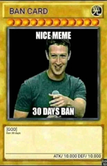

Bio
Bio e Informações das Lives (AhFeeeh)
Sobre mim
Olá e seja bem vindo(a), Sou Felipe R M, tenho 33 anos e sou ou era um viciado em video jogos, sejam eles em consoles ou computadores.
Jogo games desde criança, meu primeiro video game foi um Master System 3 (1993 ou 1994),
Mas também já troquei e evolui os consoles com o passar do tempo.
Já possuí Nintendo 64, Playstation 1, Playstation 2 e Playstation 3. Porém Hoje apenas mantenho meu Wii e WiiU comigo. (Gosto Bastante) e se precisar uso emuladores para matar saudade.
Ultimamente tenho jogado em meu PC Gamer também, onde tenho muitos games adquiridos nas DRM's: Steam, Origin, Ubisoft Games e Epic Games. (Fique a vontade para adicionar)
Fora das câmeras, na vida real
Sou velho de guerra, sempre fui a criança esperta e curiosa, que consertava as coisas, com 10 anos ganhei meu primeiro computador (Windows 98, novidade na época), e me dava muito bem com ele, sempre fui muito pró ativo e autodidata. (Sim, eu comecei a formatar computador meses depois que ganhei ele, e fui evoluindo, instalando jogos e fazendo coisas que muita gente tem dificuldade hoje ou paga para ter).
Sou Programador ou Desenvolvedor de Sistemas há 8 anos, porém atuo dentro dessa área a 15 anos profissionalmente (comecei como Analista de Suporte), atualmente não estou empregado e amarrado em nenhum contrato de longo prazo.
Porém nunca estou à toa na vida. Sempre tenho coisas para fazer com códigos, seja em projetos pessoais, projetos para meu pai entre outros. (para saber mais @frmichetti aqui mesmo no GitHub).
Estudo e me atualizo constantemente. (É imprescindível nessa área).
Também sou guitarrista, metaleiro desde pequeno e gosto de fazer muito barulho, as vezes solto videos tocando um riff aqui e ali… (Pretendo um dia fazer lives mas preciso evoluir muito ainda). Guitarra para mim também é um hobby.
E finalmente posso dizer que sou Ex-Patinador, Ex-Atleta dos Patins Aggressive. Foi uma coisa muito boa que aconteceu na minha vida e até que durou bastante, porém tive que parar devido a outros projetos, durou cerca de 8 anos, cultivo meus amigos até hoje. (para saber mais @feehroller no YouTube)
Meu conteúdo
Aqui posso jogar de tudo. Desde retrô a jogos de música. Se me diverte está valendo!
Obs: Tento jogar tudo aquilo que possuo e gastei dinheiro primeiro. Andei acumulando muita coisa e existem jogos que nem ao menos instalei na Steam.
Obs2: Você pode sugerir conteúdo, irei deixar link de formulário de contato anexo.
Cheguei ao ponto de ter que criar um mini sistema para gerenciar até o que tenho…
Calendário
Não posso prometer constância nas minhas transmissões e gravações por enquanto. Stream de conteúdo para mim é apenas um hobby
Mídias Sociais
Drm's IDs
Ubisoft
ahfeeeh
Steam
ahfeeeh
Origin
ahfeeeh
Epic Games
ahfeeeh
Setup PC
SSD Kingston NV1 500GB, M.2 2280 NVMe, Leitura: 2100MB/s e Gravação: 1700MB/s - SNVS/500G
Quantidade: 2Fonte Corsair 650W 80 Plus White VS650 - CP-9020172
Quantidade: 1WaterCooler Corsair Hydro Series Quiet Edition H55 - CW-9060010-WW
Quantidade: 1Microsoft Windows 10 Home 32/64 Bits ESD KW9-00265 - Digital para Download
Quantidade: 1Memória Corsair Vengeance LPX 16GB (2x8GB) 2133Mhz DDR4 CL13 Black - CMK16GX4M2A2133C13
Quantidade: 1Placa-Mãe ASUS p/ Intel LGA 1151 ATX ROG STRIX B360-F GAMING, DDR4
Quantidade: 1Processador Intel Core i5-8400 Coffee Lake 8a Geração, Cache 9MB, 2.8GHz (4.0GHz Max Turbo), LGA 1151 Intel UHD Graphics 630 - BX80684I58400
Quantidade: 1SSD Kingston KC1000H M.2 2280 240GB PCI-Express NVMe 3.0 x 4 c/ adaptador HHHL Leituras: 2700MB/s e Gravações: 900MB/s - SKC1000H/240G
Quantidade: 1TP-Link Placa de Rede Wireless PCI 150MBPS TL-WN751ND
Quantidade: 1Kit Microsoft Teclado Desktop 800 Wirelles e Mouse Óptico 2LF-00023
Quantidade: 1Gabinete CoolerMaster ATX HAF 912 Plus Preto RC-912P-KKN1
Quantidade: 1HD Western Digital SATA 1TB 6GBPS 7200RPM 64MB Buffer Caviar Black WD1002FAEX
Quantidade: 1
É isso mesmo, não tem placa gráfica dedicada (sorry)
Setup Montado em 2018 por mim. Todas as peças do https://www.kabum.com.br
TV LG 3D Stereoscopico de 42'' - Full HD
Setup Guitarra's
Guitarra Esp Ltd By Alexi Laiho 200 White Flying V
Guitarra Esp Ltd Ex 401 Dx Black Preto : LTD - Modelo : EX 401DX STBLK
Pedaleira para Guitarra GT1 Boss
Headphone Sony MDR-XB650BT,Azul, Bluetooth e NFC Extra Bass,Reforço de Graves Fone de Ouvido
2 unidadesFone de Ouvido com Microfone Mdr-XB450AP Extra Bass Preto/Vermelho Sony
1 unidadeCaixa Amplificada Borne Strike G30 1x6,5 15W RMS Jornal
Cabo Profissional Mac IM10VE Max Series P10 3,05M
Palhetas Daddario 1CSH2-25 Classic Light Gauge 50mm She
Correia de Couro Basso SF112 Marrom Liso para Instrumentos de
Corda
Consoles
Nintendo Wii - Conectado a um SSD de 240GB entupido de games
Nintendo WiiU - Conectado a um SSD de 240GB, também com muitos games
Obs: Ainda não tenho a placa de captura. Mas vou providenciar para jogar nativamente do console.
Obs2: Em breve postarei a lista de toda a coleção e opções de games que possuo.
Meus Jogos
https://ahfeeeh.github.io/meus-jogos/
Metas
Sem metas para hoje no stream.
2023 vai ser o ano da guitarra.
E continuarei com meus trabalhos como WEB DEV
Doações
Quer apoiar e incentivar meu canal?
Clique neste painel, faça uma doação pelo Paypal, Pix em live com mensagem na tela (tem valor minimo), ou Pix de qualquer quantia a qualquer momento e participe da live com uma mensagem!!
Sua participação é muito importante para mim
Obs. Não se sinta obrigado a doar nada , e qualquer valor é muito precioso para mim.
Doe pelo Pix (qualquer valor)
https://ahfeeeh.github.io/faz-o-pix/
Doe pelo LivePix (tem valor mínimo)
https://widget.livepix.gg/embed/0877bebc-f06d-4289-84d5-5613e9dea661
Doe pelo Paypal (qualquer valor)
Regras
Não Existem Regras!!!
Fique avontade para falar do que quiser e com quem quiser,
mas mantenha-se dentro da lei, tente não arrumar problemas
senão
Segura o Ban!
Amarra o Ban!
Segura o Ban Ban Ban Ban Ban!
Vai pro castigo…
